СНАЧАЛА — ЗНАКОМСТВО
Перед выездом проводим инструктаж и пробный проезд. Можно спокойно освоиться с техникой.
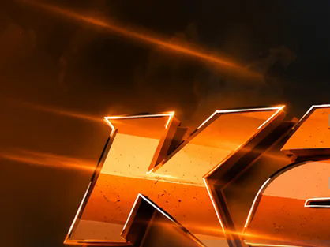
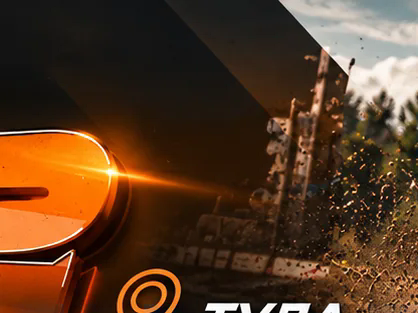
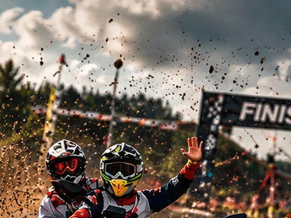
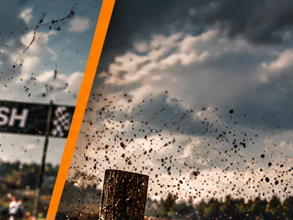
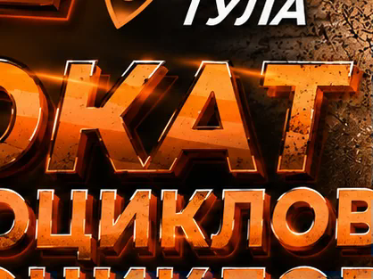
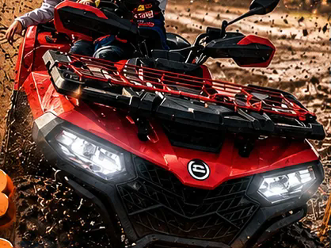
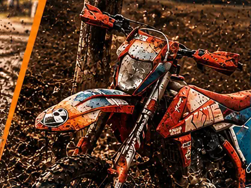
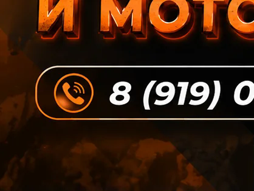
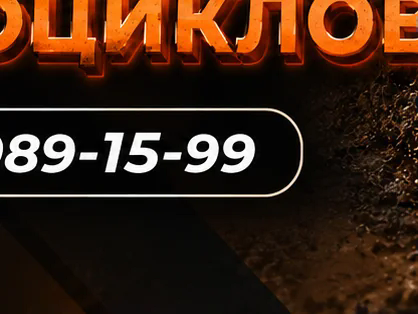
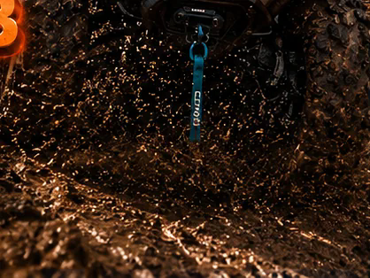
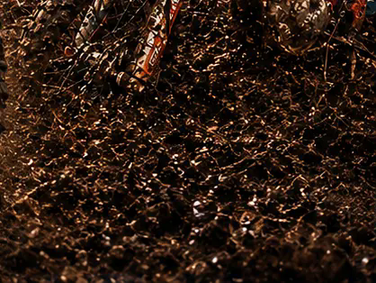
K2 / ТУЛА / КВАДРОЦИКЛЫ / ЭНДУРО
Прокат квадроциклов CFMOTO 520L
и эндуро KEWS K16 в Туле.
01 / ВЫБИРАЙ СВОЙ ХАРАКТЕР
На четырёх колёсах или на двух.
Вдвоём, с друзьями или в своём ритме.
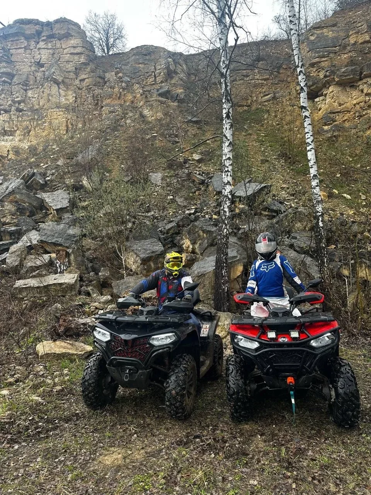
РЕАЛЬНЫЕ КАДРЫ ИЗ НАШИХ ПОЕЗДОК02 / МАРШРУТ С ХАРАКТЕРОМ
Едем по лесу и заброшенному карьеру, по накатанным дорогам и трассам «Гонки героев» и «Льва Николаевича».
Без цели застрять по уши в грязи. Здесь главное — удовольствие от управления и впечатления.
Выбрать длительность →03 / ДЕТАЛИ РЕШАЮТ
От первого знакомства с техникой
до кадра, который захочется сохранить.
Перед выездом проводим инструктаж и пробный проезд. Можно спокойно освоиться с техникой.
Джерси, очки, шлем, наколенники и защита «черепаха» — экипировка для поездки.
Регулярное обслуживание и личный контроль состояния квадроциклов и мотоциклов.
Фото- и видеосъёмка доступна по договорённости. Сохрани не только эмоции, но и кадры.
ОТЗЫВЫ / ВПЕЧАТЛЕНИЯ ГОСТЕЙ
13 отзывов гостей
из обсуждения ВКонтакте
Обсуждение ВКонтактеВыражаю благодарность всему коллективу. 👍 Техника вся новая, инструктора опытные. 💪 Маршруты интересные. Впечатления бомба 😎 Будем приезжать ещё 😁
Обсуждение ВКонтактеОчень хороший коллектив Профессиональные инструктора Хорошая экипировка Новая техника Маршруты интересные Главное слушать внимательно инструктора Впечатления бомба Всем рекомендую Лучше в Туле не найдешь Будем приезжать ещё 🤗
Обсуждение ВКонтактеОчень понравился маршрут и инструктор , Антон очень позитивный и добрый парень , обязательно вернусь к ним ещё и не раз , а так же очень хороший у них персонал всё рассказали и показали сразу на берегу что сколько стоит , кто думает ехать или нет , не думайте езжайте и…
Очень понравился маршрут и инструктор , Антон очень позитивный и добрый парень , обязательно вернусь к ним ещё и не раз , а так же очень хороший у них персонал всё рассказали и показали сразу на берегу что сколько стоит , кто думает ехать или нет , не думайте езжайте и насладитесь хорошими эмоциями , особенно на хороших ямах и луж 😅
Обсуждение ВКонтактеСпасибо за новые ощущения ☺ Всё было прекрасно: доступный инструктаж, пробный круг, Антон - душка 🙃 помогал вылезти из грязи, которую мы нашли на маршруте 😀 Красота невероятная! Очень рекомендую ☺
Обсуждение ВКонтактеНедавно арендовали два квадроцикла для поездки с женой и братом и остались в полном восторге! От всей нашей компании хотим выразить благодарность вашей команде. Во-первых, сама техника — выше всяких похвал. Квадроциклы были полностью исправны, чистые и отлично…
Недавно арендовали два квадроцикла для поездки с женой и братом и остались в полном восторге! От всей нашей компании хотим выразить благодарность вашей команде. Во-первых, сама техника — выше всяких похвал. Квадроциклы были полностью исправны, чистые и отлично подготовлены к поездке, что позволило нам чувствовать себя уверенно на маршруте. Отдельное спасибо хочется сказать нашему инструктору. Он проявил себя как настоящий профессионал: был невероятно вежлив, добр и внимателен. Перед стартом всё подробно объяснил, дал ценные советы, благодаря чему мы чувствовали себя комфортно даже на сложных участках пути. Ну и вишенка на торте — это маршрут. Инструктор подобрал очень красивый и живописный путь, который позволил насладиться потрясающими видами природы. Это было незабываемое приключение! Обязательно вернёмся к вам снова и будем рекомендовать друзьям!
Обсуждение ВКонтактеБрали прокат квадроциклов всё отлично техника в отличном состоянии персонал открытые приветливые ребята всё рассказали показали,дети в восторге, рекомендую
Обсуждение ВКонтактеГоняли сегодня на квадриках, ну что хочется сказать…Было невероятно круто!!! Сначала нас встретили, дали обмундирование, провели инструктаж, дали возможность для выезда попробовать «машину». Дальше началось невероятное-поездка по полям, лесам, горам 💪 нас на фоткали,…
Гоняли сегодня на квадриках, ну что хочется сказать…Было невероятно круто!!! Сначала нас встретили, дали обмундирование, провели инструктаж, дали возможность для выезда попробовать «машину». Дальше началось невероятное-поездка по полям, лесам, горам 💪 нас на фоткали, наснимали! Мы остались довольны и даже устали от эмоциональных всплесков
Обсуждение ВКонтактеРешила подарить сыну новые эмоции: езду на квадроцикле) До поездки связалась с Антоном. Он всё подробно рассказал: про сопровождение на маршруте, что с собой взять из одежды и тд. Впечатления сына: Перед началом поездки инструктор понятным языком объяснил, как…
Решила подарить сыну новые эмоции: езду на квадроцикле) До поездки связалась с Антоном. Он всё подробно рассказал: про сопровождение на маршруте, что с собой взять из одежды и тд. Впечатления сына: Перед началом поездки инструктор понятным языком объяснил, как управлять квадроциклом, так как я на нем еще не катался (это время не вошло в основной маршрут). Одежду и экипировку выдали свою, что очень удобно. Квадроцикл в отличном состоянии, ехал, как надо. По пути заехали на смотровую площадку. Там инструктор предложил сделать фотки. Мне очень понравилось! Обязательно вернусь сюда снова. Спасибо ребятам за возможность погонять по бездорожью!))
Обсуждение ВКонтактеВсе понравилось 5 звезд
Обсуждение ВКонтактехочется выразить благодарность организации, всё на высшем уровне 💯 ребята молодцы! маршруты интересные и впечатляющие! особенно понравилось ездить по грязи 😅 инструктор Антон всё чётко показал и рассказал о езде на квадроцикле, и что из себя будет представлять поездка.…
хочется выразить благодарность организации, всё на высшем уровне 💯 ребята молодцы! маршруты интересные и впечатляющие! особенно понравилось ездить по грязи 😅 инструктор Антон всё чётко показал и рассказал о езде на квадроцикле, и что из себя будет представлять поездка. он поможет, расскажет и красиво вас запечатлит 🙌 ездили туда на день рождение и молодой человек остался в восторге. ощущения после поездки-адреналин 🔥 прекрасно провели день 🥳 эмоции на все сто! вернёмся туда и не один раз, будем вас рекомендовать 😊
Обсуждение ВКонтактеОтлично покатались! Брали маршрут «Квадропутешествие» на 4 часа — впечатлений море. Поля, лес, грязь, лужи, вода, хорошие участки, где действительно можно почувствовать квадроцикл. Маршрут интересный и разнообразный, четыре часа проходят очень быстро. Катались вместе с…
Отлично покатались! Брали маршрут «Квадропутешествие» на 4 часа — впечатлений море. Поля, лес, грязь, лужи, вода, хорошие участки, где действительно можно почувствовать квадроцикл. Маршрут интересный и разнообразный, четыре часа проходят очень быстро. Катались вместе с супругой и остались очень довольны. Отличный вариант для активного отдыха и ярких эмоций. Однозначно рекомендую! 5/5 🔥
Обсуждение ВКонтактеВзяли прокат на 1, 5 часа. Инструктор был опытным и добрым, все внятно и понятно объяснил. На протяжении всего маршрута был с нами. Если были где вопросы, то подсказывал. Маршрут был разнообразным и интересным. Обязательно вернемся.
Обсуждение ВКонтактеХотим выразить огромную благодарность Антону! Выбрали маршрут на 2,5 часа, не пожалели ни на грамм. Все было супер! Классные места, много фоток и море впечатлений
04 / НЕ СТОК. НАШИ ЛЮДИ.
05 / ПЕРЕД СТАРТОМ
Перед арендой проводим инструктаж и тестовый проезд. Расскажи при записи о своём опыте: поможем выбрать подходящую технику и формат.
Надень удобную одежду по погоде и закрытую обувь, которую не жалко испачкать. Комплект экипировки и необходимые документы уточни при записи.
CFMOTO 520L — полноразмерный двухместный квадроцикл. Условия поездки с пассажиром и итоговую стоимость уточни у администратора.
Напиши в сообщения сообщества ВКонтакте или позвони по номеру +7 919 089-15-99. Согласуем дату, время, технику и стоимость. Кнопка записи открывает диалог с K2.
K2 / ТВОЙ СЛЕДУЮЩИЙ ВЫХОДНОЙ
Напиши нам — подберём технику,
маршрут и время заезда.